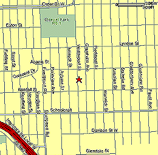

|
Directions to Vetal! |
|
|  | Vetal Elementary - 14200 Westwood, Detroit Take State St. north to Ann St. and turn right. Turn left onto Glen. Go to the second light and turn left onto Fuller St. Take Fuller to N. Main St. and turn right. Stay in the right lane to get onto M-14 East. Take M-14 East to I-96 East. I-96 will connect with M-14 on the left. Take I-96 about 20 minutes to Evergreen Rd. Evergreen will be the first local exit when the highway splits into Express and Local. Stay in the left-hand lane and turn left onto Evergreen Rd. At the second light, take a right onto Schoolcraft Rd. At the next light, take a left onto Westwood Ave. Vetal is 1.5 blocks up the street on the right-hand side. for more info, contact Sarah Politziner |